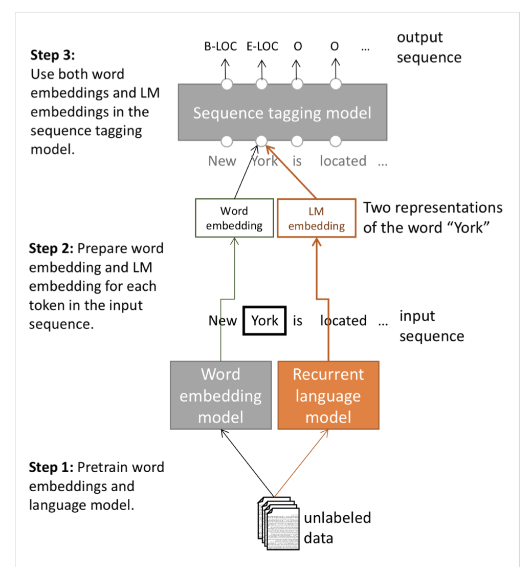

In previous posts, we discussed the basic vectorisations of words. One-Hot considers each words in the context is orthogonal to each other. Word2vec provides us a distributive way to present words as probabilities of showing up given the neighbouring words. \(n\)-grams as a character-based method solves some problems about the word-based method.
For a versatile NLP application, we would like to have a pre-trained word vectors so that we can fine tune for some specific application such as QA or translation. But use a pre-trained model, we will inevitably encounter unknown words which are not in the pre-trained model. Usually, we will let the machine to output <UNK> for unknown words. The solutions to the unknown words problem can be to develop character-based word vectors or partially solve it during the fine-tune stage.
Another problem is that we just have one representation for a word (i.e.one word vector for one word), but words have different aspects, including semantics, syntactic behaviour, and register/connotations.
ELMo
In the old NLP models, those language models are producing context-specific word representations at each position.
Later approach called TagLM in 2017 provides a direction of solution. Do semi-supervised approach where we train NLM on large unlabelled corpus, rather than just word vectors.

The breakout version of word token vectors or contextual word vectors emerged in 2018, called ELMo: Embeddings from Language
Models. It learns a deep Bi-NLM and uses all its layers in prediction. ELMo ends up performing slightly better than TagLM in the task of CoNLL 2003 Named Entity Recognition. However, results from many tests showed that ELMo gives a better performance for all tasks.
For ELMo, the two biLSTM NLM layers have differentiated uses or meanings.
-> Lower layer is better for lower-level syntax, etc. (Part-of-speech tagging, syntactic dependencies, NER)
-> Higher layer is better for higher-level semantics. (Sentiment, Semantic role labelling, question answering, SNLI)
Transformer
From 2018 onwards, many models used Transformer architecture to gain better performance.
The motivation to use the Transformer is that we want parallelisation but RNNs are inherently sequential. Moreover, despite GRUs and LSTMs, RNNs still need attention mechanism to deal with long range dependencies – path length between states grows with sequence otherwise. But if attention gives us access to any state, probably we only need attention.
The architecture is like
There are two types of attention function. The one used in the Transformer is so-called Dot-Product Attention. Mathematically,
\[
A(q, K, V) = \sum_i \frac{exp(q \dot k_i)}{\sum_j exp(q \dot k_j)} v_i
\]
where \(q\) is a query, and \((k_i-v_i)\) denotes the key-value pairs.
For multiple queries, \(Q\), and with normalisation, we have
\[
A(Q, K, V) = softmax(\frac{QK^T}{\sqrt{d_k}})V
\]
Another improvement is to use multi-head attention such that
\[
MultiHead(Q, K, V) = Concat(head_1, …, head_h)W^O
\]
where
\[
head_i = A(QW_i^Q, KW_i^K, VW_i^V)
\]
BERT (TODO)
With the improvement made by Transformer, a new model was proposed by Google AI. That is BERT, which stands for Bidirectional Encoder Representations from Transformers. It is a pre-training of deep bidirectional Transformers for language understanding.
Acknowledgement
The creation of this post is inspired by Datawhale. The learning path is based on Stanford University CS224n: Natural Language Processing with Deep Learning.
Reference
- Bilibili.com. 2020. [online] Available at: https://www.bilibili.com/video/BV1s4411N7fC?p=13 [Accessed 3 July 2020].
- Nlp.seas.harvard.edu. 2020. The Annotated Transformer. [online] Available at: http://nlp.seas.harvard.edu/2018/04/03/attention.html [Accessed 3 July 2020].
本博客所有文章除特别声明外，均采用 CC BY-SA 3.0协议 。转载请注明出处！